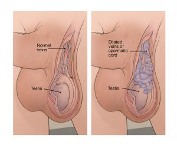

Varicocele

CAUSES
- A spermatic cord holds up each testicle. The cords also contain the veins, arteries, and nerves that support these glands. In healthy veins inside the scrotum, one-way valves move the blood from the testicles to the scrotum, which sends it back to the heart.
-
Sometimes the blood doesn’t move through the veins like it should and begins to pool in the vein, causing it to enlarge. A varicocele develops slowly over time.
-
There are no established risk factors for developing a varicocele, and the exact cause is unclear.
DIAGNOSIS
There are several ways that your doctor may diagnose a varicocele, includingTrusted Source:
-
Physical exam. Because a varicocele can’t always be felt or seen when you’re lying down, your doctor will most likely examine your testicles while you’re standing up and lying down.
-
Valsalva maneuver. This technique is often used to diagnose smaller varicoceles. The Valsalva maneuver typically requires you to stand, take a deep breath, hold it, and bear down while the doctor examines your scrotum.
-
Scrotal ultrasound. In some cases, a scrotal ultrasound may be necessary. This helps measure the spermatic veins and allows your doctor to get a detailed, accurate picture of the condition.
TREATMENT
It’s not always necessary to treat a varicocele. But you may want to considerTrusted Source treatment if the varicocele:
-
causes pain
-
causes testicular atrophy
-
causes infertility
-
You may also want to consider treatment if you’re thinking about assisted reproductive techniques.